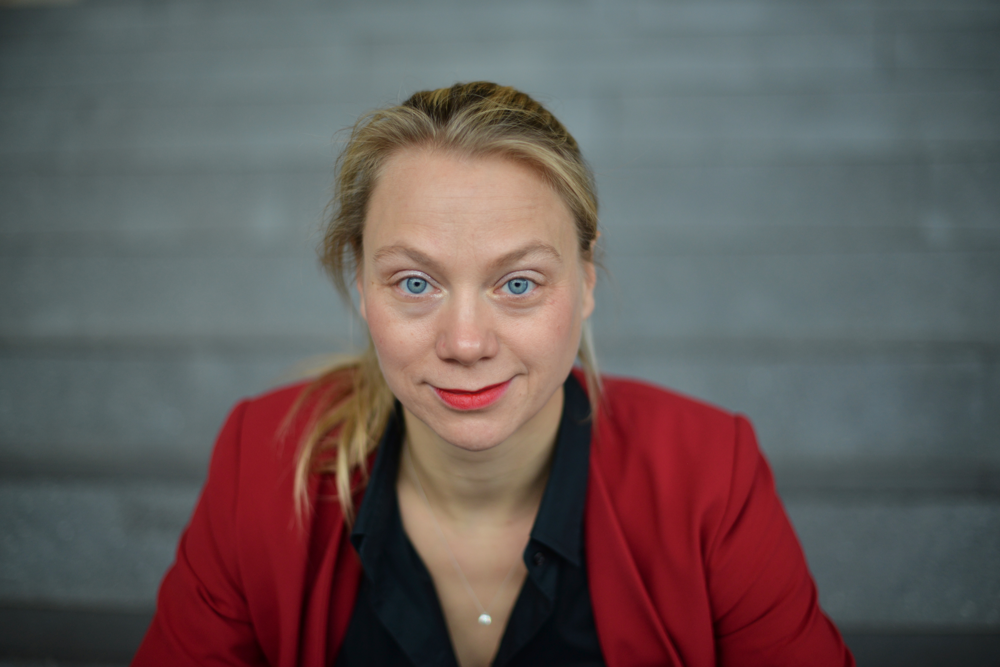

Das Team stellt sich vor
Patrick Zerrer
Vita

Patrick Zerrer ist wissenschaftlicher Mitarbeiter am Zentrum für Medien-, Kommunikations- und Informationsforschung an der Universität Bremen. Er schloss den „B.A. Governance and Public Policy - Staatswissenschaften” an der Universität Passau sowie den „M.A. Öffentliche Kommunikation” an der Friedrich-Schiller-Universität ab. Seine Forschungsinteressen liegen insbesondere im Bereich der politischen Online-Kommunikation, der Nachrichten- und Mediennutzung sowie der politischen Partizipation mit einem Fokus auf (digitalen) Klimaprotest und -bewegungen. Für seine Forschung nutzer er unterschiedliche Methoden, u.a. digitales (mobiles) Tracking, digitale Spurdaten, Umfragen, (automatisierter) Inhaltsanalysen und Interviews.
Forschungsschwerpunkte
- Politische Kommunikation
- (mobile) Mediennutzungsforschung
- Klimaprotestforschung
Katharina Maubach
Vita

Katharina Maubach ist seit Dezember 2022 als wissenschaftliche Mitarbeiterin am Zentrum für Medien-, Kommunikations- und Informationsforschung der Universität Bremen im Lab „Politische Kommunikation und Innovative Methoden” tätig. Sie forscht im Rahmen des DFG-geförderten Projektes „Remixing Political News Reception” unter der Leitung von Prof. Stephanie Geise zur Rezeption multimodaler Medieninhalte. Innerhalb des Projektes war sie seit Februar 2021 an der Universität Münster beschäftigt, wo Sie zudem von Januar 2019 bis Januar 2021 im Arbeitsbereich von Prof. Volker Gehrau forschte und lehrte. Ihr Studium der Kommunikationswissenschaft absolvierte sie ebenfalls an der Universität Münster; in ihrer Masterarbeit forschte sie zum Einfluss politischer Nachrichtensatire auf politisches Interesse und Informiertheit.
Forschungsschwerpunkte
- Politische Kommunikation
- Rezeptions- und Wirkungsforschung
- Klimakommunikation
- Statistische Methoden
Cornelius Puschmann
Vita

Cornelius Puschmann ist Professor für Kommunikations- und Medienwissenschaft mit dem Schwerpunkt Digitale Kommunikation am ZeMKI, Zentrum für Medien-, Kommunikations- und Informationsforschung. Nach Stationen an der Humboldt Universität zu Berlin, der Zeppelin Universität Friedrichshafen und dem Leibniz-Institut für Medienforschug | Hans Bredow Institut wurde er 2019 nach Bremen berufen. Gastwissenschaftler war Cornelius Puschmann u.a. am Oxford Internet Institute der University of Oxford und am Berkman Klein Center for Internet and Society der Harvard University, sowie am Department of Media Studies der Universität Amsterdam.
Forschungsschwerpunkte
Digitale Mediennutzungsforschung
Hate Speech / Desinformation in sozialen Medien
Methoden der automatisierten Inhaltsanalyse
Stephanie Geise
Vita

Prof. Dr. habil. Stephanie Geise ist Professorin für Kommunikations- und Medienwissenschaft am ZeMKI der Universität Bremen und vertritt den Schwerpunkt Politische Kommunikation & Innovative Methoden. Ihre Forschungsschwerpunkte liegen im Bereich der politischen Kommunikation und Medienwirkung, mit einem Fokus auf visuelle und multimodale Kommunikation. Im Fokus steht die Frage, wie sich multimodale Medienbotschaften – z.B. klassische Nachrichten oder Social Media Posts – auf das politische Denken und Handeln auswirken. Zur Analyse nutzt sie häufig Kombinationen aus „klassischen” standardisierten Methoden (z.B. Befragungen, Experimentaldesigns) und innovativen computerbasierten Beobachtungsverfahren (z.B. Eyetracking, Automated Emotion Detection). Stephanie Geise leitet das von der Deutschen Forschungsgemeinschaft (DFG) geförderte Forschungsprojekt “Remixing Multimodal News Reception” und koordiniert das DFG-gefördertes Netzwerk „Potenziale und Herausforderungen der Computational Communication Science am Beispiel von Online-Protest”, dass computationale Methoden zur Analyse von Online-Protest reflektiert und weiterentwickelt. Sie leitet das SKILL-Innovation Lab „Digital Data Literacy & Analysis” am ZeMKI der Universität Bremen und hat die Kapitel zum „Überprüfen von Zusammenhängen” zum Lehrbuch beigesteuert.
Forschungsschwerpunkte
- Politische Kommunikation
- Rezeptions- und Wirkungsforschung
- Visuelle und multimodale Kommunikation
- Innovative Methoden & Methodenkombinationen
Michael Linke
Vita

Michael Linke ist wissenschaftlicher Mitarbeiter am Zentrum für Medien-, Kommunikations- und Informationsforschung an der Universität Bremen und hat einen B.A. in Kunstgeschichte und Politikwissenschaft sowie einen M.Sc. in Informatik für Geistes- und Sozialwissenschaftler. Seine Forschungsinteressen liegen im Bereich Maschinelles Lernen in den Sozialwissenschaften, Netzwerkanalyse und Protestforschung.
Forschungsschwerpunkte
- Maschinelles Lernen, vor allem Deep Learning
- Protest Event Analysis
- Politische Kommunikation
Hannah-Marie Büttner
Vita

Hannah-Marie Büttner ist als wissenschaftliche Mitarbeiterin der Universität Bremen am Zentrum für Medien-, Kommunikations- und Informationsforschung sowie am Institut für Informationsmanagement tätig. Sie hat einen B.Sc. Sozialwissenschaften an der Universität Trier und einen Research Master Social Sciences an der University of Amsterdam absolviert.Ihre Forschungsinteressen und methodischen Schwerpunkte liegen im Feld der Computational Social Science. Gegenwärtig forscht sie zu Protestbewegungen und deren Social Media Aktivismus, insbesondere auf der Plattform Telegram.
Forschungsschwerpunkte
- Politische Kommunikation
- Soziale Bewegungen
- Soziale Netzwerkanalyse
- Computerbasierte Methoden
Lena Otto
Vita

Lena Otto ist Studentin im Master of Education der Universität Bremen mit den Fächern Spanisch und Englisch. Neben einzelnen Tätigkeiten als studentische Hilfskraft im Bereich der Fremdsprachendidaktik am Fachbereich 10 arbeitet sie seit August 2022 als studentische Hilfskraft im Universitätsprojekt “SKILL-UB”. Im Rahmen dieses Projektes hat sie den Lehr-Lern-Videos ihre Stimme geliehen.
Thomas Leleko
Vita

Ich studiere Jura mit dem Schwerpunkt internationales und europäisches Wirtschaftsrecht an der Universität Bremen und habe meine praktischen Stationen bei CMS Hasche Sigle im Bereich des Kartellrechts und beim Bundeskartellamt absolviert. Als studentische Hilfskraft am Lehrstuhl für empirische Wirtschaftsforschung hatte ich die Gelegenheit, mich näher mit dem Feld der Statistik zu befassen und bin am ZeMKI unter anderem für die Umsetzung der Lehrvideos für R-Studio zuständig.